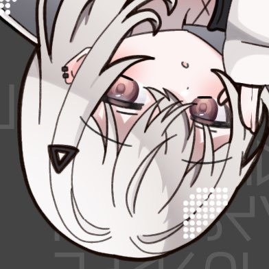
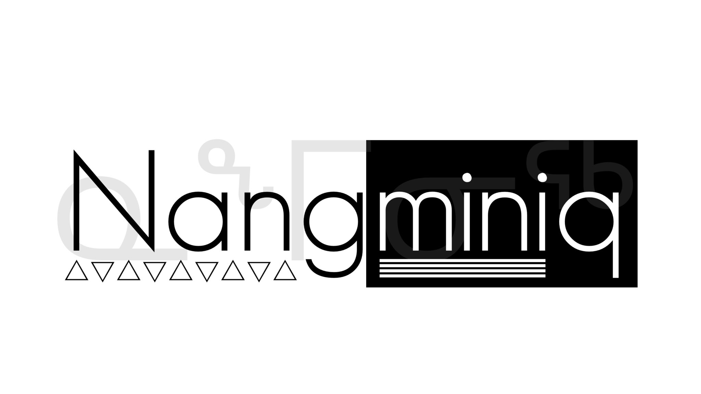

Welcome to
Metalepsis_ site
烏龍茶と宇宙の矛盾に基づいた100%不安全なサイトです。
Scroll Down
News
2025.07.28
サイトを公開しました。
About

Metalepsis_
はじめまして。Metalepsis_です。
今日は「猿でもわかる私のサイト」をお届けします。
なお、一部に事実と異なる点や過度に美味しい誇張が含まれる場合があります。
苦情は人身売買美味しい加工食品センター苦情課へ。対応は主にマグロが行います。
それでは、さっそく始めましょう！
Work
Enth
2021 - Present
現在はEnterとdominanceを制作しています。
Logo edit
2022 - Present
主にTwitterのフォロワーのロゴを制作しています。
Projects
